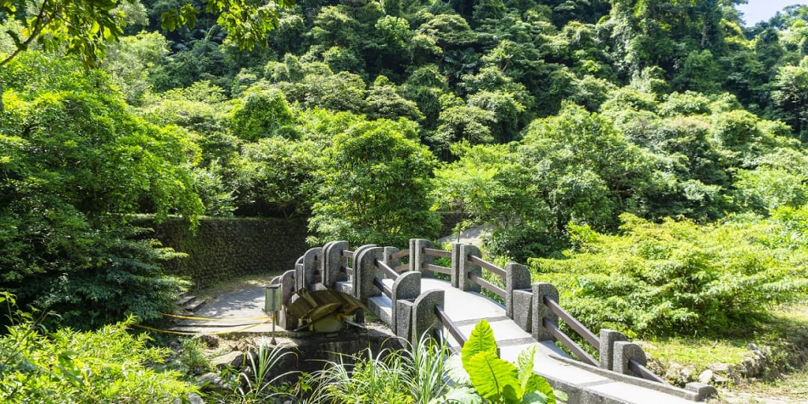
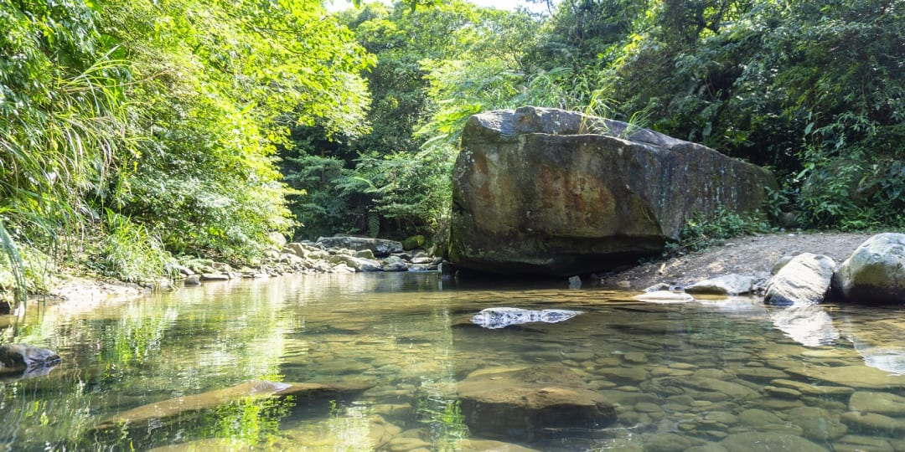
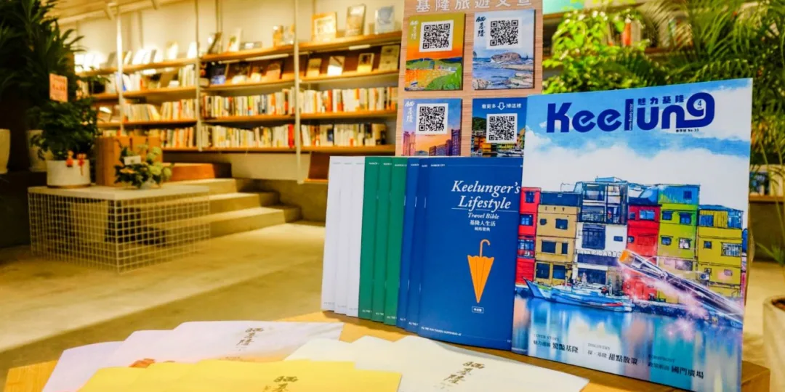

阿拉寶灣（和平島地質公園）
「阿拉寶灣」在以前是阿美族人到基隆討生活時所命名，他們以臺東縣東河鄉泰源村小部落為名，頭目告誡遠離家鄉的族人們說：「
千萬不要忘了自己的故鄉，要時時想念自己是阿美族人。」因此阿拉寶灣的名稱還有著「你的故鄉」的美麗含意在裡頭。
阿拉寶灣內有很多因海蝕形成一格格塊狀岩石，在日出黃金色陽光灑落時，形成攝影師之間最熱門的景點，
阿拉寶灣還曾列入美國中文網評選「全球最美21個日出觀測點」之一。
阿拉寶灣，每年僅開放4個月，且單日人數上限為300人，如果民眾有想參觀阿拉寶灣，必須七天前在和平島地質公園官方網站報名、
專業導覽人員陪同及全程穿戴安全裝備，全程皆為戶外體驗，無樹木遮陰，民眾需準備物理防曬用品，再加上天候關係開放時間不長，
因為這些原因使阿拉寶灣成為「秘境中的秘境」。
開放時間：全日開放
地 址：基隆市中正區平一路360號
服務專線：+886-2-24635452
阿拉寶灣（和平島地質公園）
暖東峽谷
暖東峽谷位於基隆市之暖暖區東勢坑，峽谷山區林相完整，沒有污染，溪水終年不斷，清澈見底，是一個休閒的好去處。
暖東峽谷上游的火燒寮年雨量為全台之最，東勢坑溪流經切割出峽谷地形，也因落差的關係，切割出來的峽谷地形相當明顯，
景色十分壯闊；峽谷雖然不大，但獨特雄偉，溪水相當的清澈。暖東峽谷園區內步道分為兩條，分別在小溪的兩側，一條沿峭壁而行，
可欣賞壯觀峭壁景象及其上生長的植物，另一條沿溪而行，小橋流水，景緻細膩，兩條步道各有千秋，且沿途亦設有觀景涼亭，
是欣賞瀑布及峽谷地形的好地方，園區內步道林木蒼蒼，花草扶疏，頗屬自然步道形態，可在步道兩旁仔細觀察昆蟲或植物之美，
清澈的溪谷亦有蜻蜓、豆娘和紫嘯鶇鳥穿梭其間。
※暖東峽谷設有無障礙廁所。
開放時間：全日開放
地 址：基隆市暖暖區東勢街221號
服務專線：+886-2-24287664


暖東峽谷
太平青鳥
矗立於太平山城上方的「太平國小」，由於學生人數過少而在2017年廢校，但因其地利優勢可眺望整體市港，形成了閱讀基隆城市豐富空間結構及歷史文理的節點，
作為山城聚落中為數不多的開放場域，基隆市政府團隊試圖透過其特殊的地理條件及空間向度，使其成為西岸最新的觀光亮點。
太平國小停招之後，先是轉型成為市府「秘密基地」，許多專案會議都在這裡進行，市府局處同仁在這裡付出無數汗水與淚水，
建築師很大膽地把樓層敲開，打開建築物的視野，一開始聽到要在山上開書店，只覺得是個瘋狂的想法，但為了這個城市的理想，也
為了讓太平國小成為傳遞希望的地方，最後促成了太平青鳥進駐。書店的開幕是今年文化界盛事之一，獨立書店的開幕竟然能吸引將近上千人參與，
這是台灣大眾對於基隆的肯定；他還說，學校原本就是傳授學問、傳遞知識及創造希望的地方，自從太平國小廢校以來，市政府一直在思索這個地方的未來，
轉型成為書店以及市政發動的引擎，可以說是別具意義
開放時間：星期一-二休息，星期三-日 上午10:00–下午18:00
地 址：基隆市中山區中山一路189巷135號
服務專線：+886-2-24276323

太平青鳥